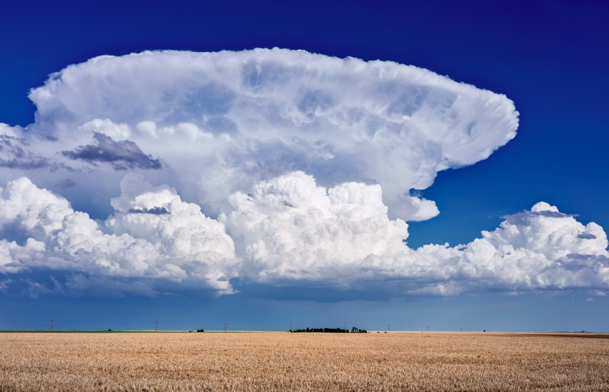

Température
Elle mesure le degré de chaleur de l'air et influence fortement la stabilité atmosphérique.
STORMLAB • MÉTÉOROLOGIE
La météorologie étudie l'atmosphère, ses mouvements et les phénomènes qui déterminent notre météo.

OBSERVATION
L'atmosphère est constamment en mouvement. La température, la pression, l'humidité et le vent participent à la formation des phénomènes météorologiques.
01 • LES BASES
Elle mesure le degré de chaleur de l'air et influence fortement la stabilité atmosphérique.
Le vent correspond au déplacement de l'air, principalement lié aux différences de pression.
Elle représente la quantité de vapeur d'eau présente dans l'air.
La pression atmosphérique correspond au poids exercé par l'air sur une surface.
02 • NUAGES
Les nuages se forment lorsque l'air humide s'élève, se refroidit et que la vapeur d'eau se condense. Le cumulonimbus est le nuage caractéristique des orages.
🌩️ Comprendre les orages03 • OBSERVER
Permet notamment d'observer les précipitations et leur déplacement.
Explorer →Permettent d'observer les nuages et l'évolution des systèmes météorologiques.
Explorer →Elles permettent d'analyser la pression, les fronts et différentes variables météo.
Explorer →Les systèmes d'alerte permettent d'informer la population lors de phénomènes dangereux.
Explorer →STORMLAB
Comprendre la météo commence par observer le ciel.
📚 Ouvrir le manuel